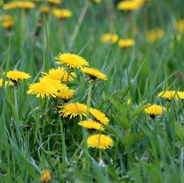
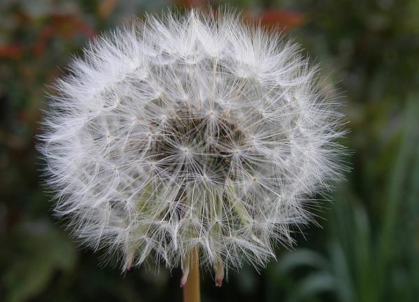
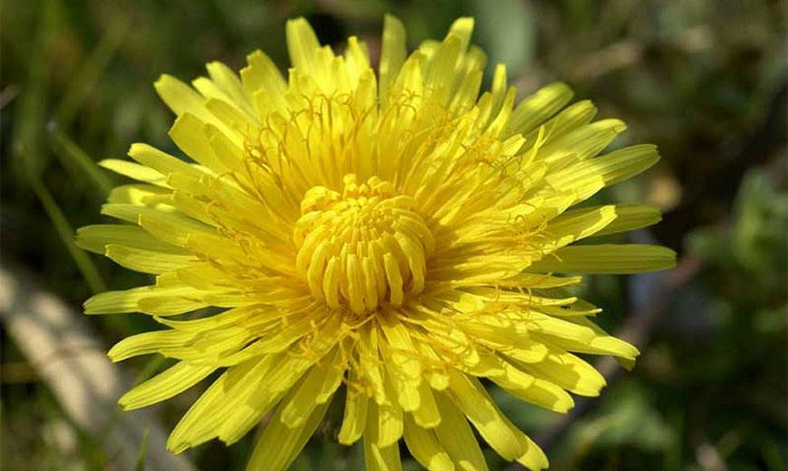

Одуванчик - это травянистое многолетнее растениекоторое достигает в высоту до 50 см. Он формирует стержневой толстый корень с диаметром в 2 м и длиной до 60 см. Листья одуванчика собраны в прикорневую розетку, слегка приподняты или прижаты к земле. Они бывают выемчато-перисторазделенные, ланцетовидные, сужены к основанию в крылатый черешок или с обращенными долями вниз. Стебли, листья и корни содержат очень горький и белый млечный сок.

Одуванчик 1

Одуванчик 2

Одуванчик 3
Среда обитания одуванчика
.Одуванчик является самым распространенным растением. Особенно он предпочитает лесостепные зоны. Растение произрастает в Украине, европейской части России, на Кавказе, в Белоруссии Сибири, Центральной Азии, на Дальнем Востоке, Камчатке и Сахалине. Оно культивируется в Японии, США, Индии, странах Западной Европы, где выведено много сортов.
Продолжительность жизни одуванчика
Одуванчик живет 2 года.
Литература
Taraxacum // Ботанический словарь / сост. Н. И. Анненков. — СПб.: Тип. Имп. АН, 1878. — XXI + 645 с.
Ростовцев С. И. Одуванчик // Энциклопедический словарь Брокгауза и Ефрона : в 86 т. (82 т. и 4 доп.). — СПб., 1897. — Т. XXIa.
Одуванчик / О. В. Чернева // Николай Кузанский — Океан. — М. : Большая российская энциклопедия, 2013. — (Большая российская энциклопедия : [в 35 т.] / гл. ред. Ю. С. Осипов ; 2004—2017, т. 23). — ISBN 978-5-85270-360-6.
Kirschner J., Štěpánek J. A Nomenclatural Checklist of Supraspecific Names in Taraxacum // Taxon. — 1997. — Vol. 46. — P. 87—98. — doi:10.2307/1224294
Юрий Константинов Одуванчик, подорожник. Природные лекарства // Энциклопедический словарь.